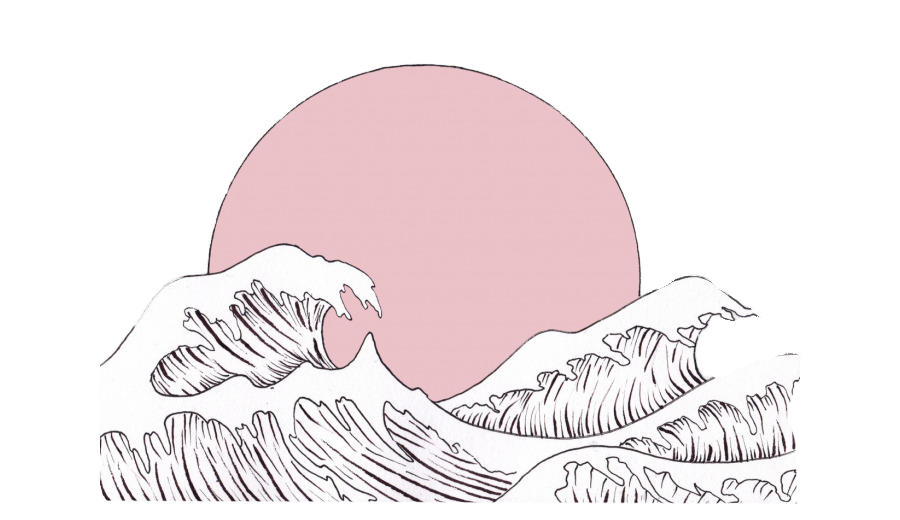

Graphic Files
TIFF (.tiff)
- Stands for Tagged Image File Format
- Create very large file sizes
- Flexible in terms of color
- Most commonly used in photo software
such as Ps or Id
JPEG (.jpg)
- Stands for Joint Photographic Experts Group
- Compressed to store a lot of information
- Used for photographs on the web because
they create a smalll file that is easily loaded - Bad for line drawings, logos or graphics
GIF (.gif)
- Stands for Graphic Interchange Format
- Can compress like JPEG files,
but cannot compress as small as JPEGS - Very limited color range
- Usualy used for animations
PNG (.png)
- Stands for Portable Network Graphics
- Created to replace GIF
- Full range of color and better compression
- Usually used for web images
Raw Image Files
- Contain data from a digital camera
- Called raw images because they have yet to be processed
- Converted to TIFF before editing
JPEG image

PNG image
GIF image

Raw Image